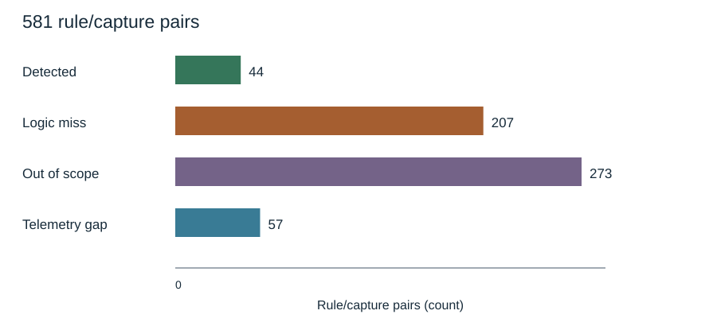
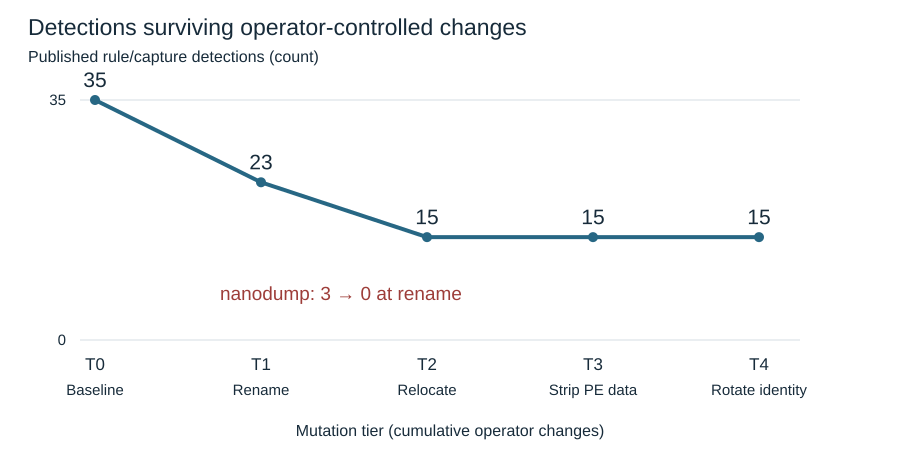
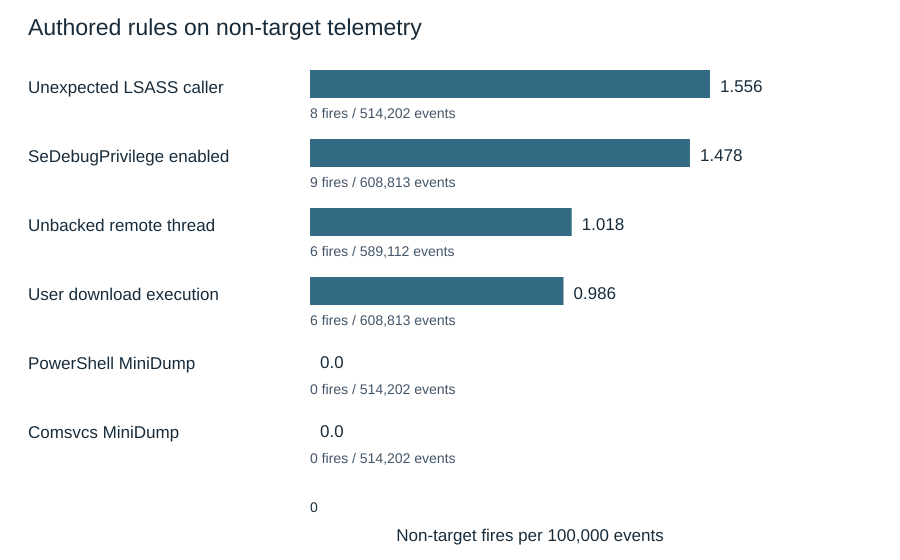

Detection engineering · Research report · ATT&CK T1003.001
What survives
a renamed dumping tool?
80 published Sigma rules were tested against 7 LSASS-dump captures containing 354,229 events. Renaming operator-controlled artifacts removes 12 of 35 published rule/capture detections; relocation removes 8 more. Distinguishing missing telemetry from logic failures makes those coverage losses interpretable.
Method
The seven captures share one lab, victim host and Sysmon configuration. Source commits and archive digests pin the input bytes. The native harness compiles Sigma conditions and applies the Sysmon and Windows logsource pipelines; the independent engine check below tests agreement.
| Input repository | Pinned commit |
|---|---|
| security_datasets | d9d40ef123d2c87d5d3df28c96bcab4f0faccc87 |
| sigmahq | 1aacbedf7fc04067e6b1b2594c4b7c1c2ff649a9 |
Capture archive SHA-256 pins
| Capture | Tool | SHA-256 of archive |
|---|---|---|
| LSASS_campaign_01 | logonpasswords | 79045fcc5a8689efed8db4911cadc11b554ef8b0bed1428ee490bb8c3f2578e6 |
| LSASS_campaign_02 | procdump | 2b32f11b1465f49df8bb4040652b001e4bb8a92de6ae7e84c2977abe68273f04 |
| LSASS_campaign_03 | comsvcs | 97a834cd72b0803d544c62cc45a41b18a4cc04a605735096be4bc5dad5e9fe7b |
| LSASS_campaign_04 | out-minidump | d6150eab4013ed0a7fc9c6b7266187214706c543c9dc3a370603f524def5de63 |
| LSASS_campaign_05 | sharpdump | 79e347b411beefaf5c7d0c951fdcb9d308fce20f8eabe666c11fa7b6165053b8 |
| LSASS_campaign_06 | outflank-dumpert | ee996c0ddc32611c572f59a68869f7d4327aaac04a3aeee65916b7221347dc1d |
| LSASS_campaign_07 | nanodump | 5335635ef2bce0fb3f8704e17fb04a3be7400ac7c4bcd6ec7c14454632acaaaf |
Cumulative mutation ladder
- T0: recorded baseline.
- T1: rename artifacts the operator brought.
- T2: relocate those artifacts.
- T3: clear PE version resources.
- T4: rotate recorded artifact fingerprints.
Behaviour reported by the operating system is not rewritten. “Benign” eligibility excludes captures with the target technique or its siblings and drops captures with no ATT&CK mapping. These are non-target attack simulations, not a measured clean production baseline.
Sources: benchmark/manifest.yml, docs/method.md, benchmark/selection.json.
Coverage results
The augmented run has 83 rules: 80 published externally and 3 authored here. Its 581 rule/capture pairs separate what the data cannot show from what the rules fail to match.

| Outcome | Pairs | Interpretation |
|---|---|---|
| Detected | 44 | At least one event matched. |
| Logic miss | 207 | Required telemetry was present, but the rule did not match. |
| Out of scope | 273 | The rule required a named tool that was not used. |
| Telemetry gap | 57 | The recording lacks an event type or required field. |
A telemetry gap is not charged as a logic miss. An out-of-scope rule is not evidence that a relevant detector failed. This distinction is the basis for investigating the remaining logic failures.
Robustness results
This ladder counts published rules firing in each capture in the S-aug selection. Authored rules are excluded. Intrusion-linked credited matches are a separate reading in the source data; the headline here uses firing counts throughout.

| Tool | T0 Baseline | T1 Rename | T2 Relocate | T3 Strip PE data | T4 Rotate identity |
|---|---|---|---|---|---|
| logonpasswords | 3 | 3 | 1 | 1 | 1 |
| procdump | 7 | 3 | 3 | 3 | 3 |
| comsvcs | 6 | 5 | 4 | 4 | 4 |
| out-minidump | 8 | 7 | 4 | 4 | 4 |
| sharpdump | 3 | 2 | 2 | 2 | 2 |
| outflank-dumpert | 5 | 3 | 1 | 1 | 1 |
| nanodump | 3 | 0 | 0 | 0 | 0 |
Relocation suppresses rules through directory exclusions. T3 and T4 cause no additional loss in this selected population; that does not establish immunity to changing version resources or fingerprints in other rule populations. The broader selection and its compensating rules are documented in benchmark/selection.md.
Authored rules
6 authored rules were evaluated separately, after inspecting the coverage failures. Each non-target rate uses the corpus eligible for that rule's own technique. The PowerShell rule also carries T1059.001 and requires script-block logging; its scored detection scope here is T1003.001.
| Authored rule | Technique scope | LSASS captures hit | Non-target fires | Events | Fires / 100k |
|---|---|---|---|---|---|
| LSASS Handle Request From Unexpected Process | T1003.001 | 7/7 | 8 | 514,202 | 1.556 |
| SeDebugPrivilege Enabled On A Token | T1134.001 | 4/7 | 9 | 608,813 | 1.478 |
| Remote Thread Started From Unbacked Memory | T1055.002 | 3/7 | 6 | 589,112 | 1.018 |
| Process Started From A User Download Directory | T1204.002 | 7/7 | 6 | 608,813 | 0.986 |
| PowerShell Script Block Calling MiniDumpWriteDump | T1003.001 | 1/7 | 0 | 514,202 | 0.0 |
| LSASS Dump Via Comsvcs MiniDump Export | T1003.001 | 1/7 | 0 | 514,202 | 0.0 |

Low rates on these quiet captures do not establish production false-positive rates or permit fine-grained ranking of the rules. The LSASS caller rule's eight non-target fires include six Azure guest-agent events and two PowerShell events; PowerShell remains unfiltered because Out-Minidump uses it.
Definitions: authored Sigma rules. Converted SPL and Kusto queries express the logic; conversion is not deployment.
Cross-validation
Zircolite was used as an independent check across 7 campaigns and the documented 23 process_access rules. The committed comparison has 0 harness-only results, Zircolite-only results or count mismatches in total. Agreement covers this evaluated subset, not every Sigma feature.
| Campaign tool | Harness-only | Zircolite-only | Count mismatches |
|---|---|---|---|
| logonpasswords | 0 | 0 | 0 |
| procdump | 0 | 0 | 0 |
| comsvcs | 0 | 0 | 0 |
| out-minidump | 0 | 0 | 0 |
| sharpdump | 0 | 0 | 0 |
| outflank-dumpert | 0 | 0 | 0 |
| nanodump | 0 | 0 | 0 |
benchmark/crosscheck.json; procedure and rule scope in the evaluator reference.
Transfer test
The same authored rules were applied without tuning to 783,367 APT29 events across two days and several hosts. 3 of 6 rules fire on both days. The table reports matching events, not reconstructed intrusion steps.
| Authored rule | apt29_day1 | apt29_day2 |
|---|---|---|
| LSASS Handle Request From Unexpected Process | 2 | 2 |
| SeDebugPrivilege Enabled On A Token | 1 | 2 |
| Remote Thread Started From Unbacked Memory | 2 | 2 |
| Process Started From A User Download Directory | 0 | 0 |
| PowerShell Script Block Calling MiniDumpWriteDump | 0 | 0 |
| LSASS Dump Via Comsvcs MiniDump Export | 0 | 0 |
This is a transfer test on another dataset. It does not establish a deployment result or end-to-end intrusion reconstruction.
benchmark/chain.json: intrusion. Day 1 has 196,081 events; day 2 has 587,286.
Limitations
Seven tools is seven tools, and one lab is one lab. The tiers are a model of an operator rather than a recording of one, and everything the model refuses to rewrite makes the measured loss smaller than it would otherwise look. A field missing from a capture is not proof it would be missing in production, which is why telemetry gaps are separated from logic misses instead of counted against the rules. The benign corpus is 91 atomic attack simulations, real host telemetry but a quiet one: 514,202 events separates a rule that fires a handful of times from one that fires constantly, and it does not support comparing 0.1 against 0.3 per 100k.
None of this is a verdict on SigmaHQ. Their rules cover far more ground than these seven captures can show, and a rule that misses here may be carrying its weight somewhere this corpus cannot see. Full limitations in docs/method.md (https://github.com/YaCnDehfuli/detection-under-load/blob/main/docs/method.md).